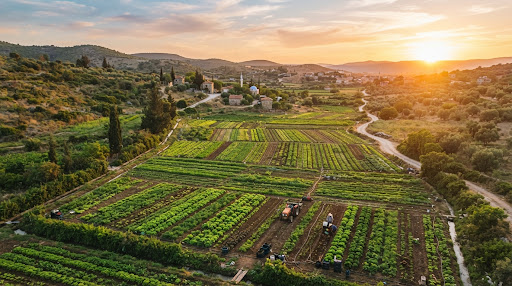
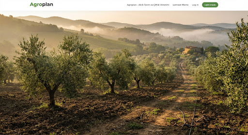
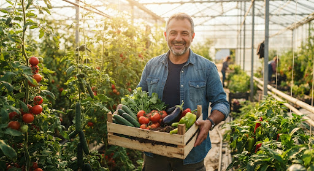
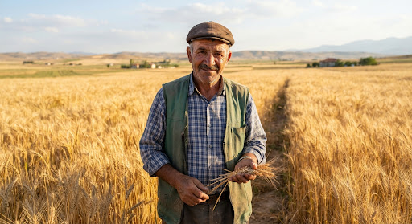
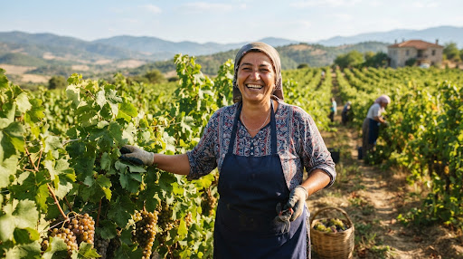
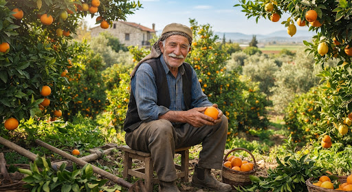

Toprağın Bereketini Bilgiyle, Emeğinizi Agroplan ile Büyütün.
Ekimden hasada, gübrelemeden sulama takvimine kadar tarlanızın tüm döngüsünü cebinizden kolayca yönetin. Çiftçimizin emeğine değer katmak için tasarlandı.

Kuvvetli yağış beklentisi var. Yaprak gübrelemesi ve ilaçlama planınızı erteleyiniz.
Tarlanızda Size Yoldaş Olan Doğal Özellikler
Karmaşık grafikler yerine, bir bakışta ne yapacağınızı söyleyen samimi, anlaşılır araçlar geliştirdik.
Parsel ve Ürün Takibi
Hangi tarlaya ne zaman ekim yapıldığını, tohum cinsini ve gelişim gününü tek bakışta harita üzerinde görün.
Akıllı Sulama & Gübreleme
Toprağın ihtiyacı kadar su ve besin verin. Hem masrafları minimuma indirin hem de mahsul verimini katlayın.
Maliyet & Hasat Hesabı
Mazot, işçilik, ilaç ve tohum giderlerini anında kaydedin. Sezon sonu beklenmedik sürprizlerle karşılaşmayın.
Zirai Hava Tahmini
Klasik tahminler yerine don, fırtına, çiğ düşmesi ve kritik rüzgar saatlerini önceden haber veren özel zirai radar.

Tohum yatağı hazırlığından depolamaya kadar her periyot için adım adım tavsiyeler.
Bereketli Topraklar
Her parselin geçmiş ürün verilerini saklayarak nöbetleşe ekim (münavebe) planınızı en doğru şekilde kurmanıza destek oluruz.

Tarlanızdaki Her Bir Metrekareyi Bilinçle İşleyin
Geleneksel çiftçilik tecrübesiyle modern dijital kayıt defterini bir araya getirdik. Kağıt kalem kaybolur, cepteki Agroplan ise traktör başında, çapa yaparken veya kahvehanede sohbet ederken hep elinizin altında.
İnternet Kesilse Bile: Çevrimdışı kayıt kabiliyeti ile çekmeyen dağ tarlalarında bile notlarınızı tutun.
Fotoğraflı Hastalık & Zararlı Arşivi: Bitkide şüpheli bir sararma veya böcek gördüğünüzde anında fotoğraflayıp parselinize iliştirin.
Toprağa Gönül Verenlerin Sözleri
Tarlanın gerçek emekçileri Agroplan ile nasıl kolaylık bulduklarını anlatıyor.
"Konya Ovası'nda 400 dönüm buğday ve arpa ekiyorum. Hangi kuyu ne kadar çalıştı, mazot nereye gitti kafamda tutmaktan kurtuldum. Agroplan sanki yanımda bir ziraat mühendisi varmış gibi hissettiriyor."

Ahmet Bey
Konya • Tahıl Üreticisi
"Bağcılıkta don riski en büyük kabusumuzdu. Geçen bahar Agroplan'ın gece yarısı don uyarısı sayesinde saman yakıp dumanlama yaptık ve tüm bağı kurtardık. Uygulama emeğimizin can simidi oldu."

Fatma Hanım
Manisa • Üzüm & Zeytin Üreticisi
"Eskiden defter yaprakları kaybolur, hangi tarlaya hangi gübreyi ne zaman verdik karışırdı. Torunuma gösterdim bana indirdi, şimdi tek tuşla hasat gelirimi hesaplıyorum. Kullanması pek kolay!"

Mehmet Dayı
Adana • Narenciye & Mısır
Agroplan ile tarlanız her zaman kontrol altında.
Uygulamayı telefonunuza indirin, parselinizi haritadan işaretleyin ve ilk ekim planınızı birkaç dakikada hazırlayın.
Bir Bardak Çay Eşliğinde Tarım Sohbeti
Sorularınız, ürün önerileriniz veya arazinizdeki özel gereksinimler için bize her zaman yazabilirsiniz:
mail mga@mgacreative.com© 2025 Agroplan • Toprağa ve emeğe sonsuz saygıyla • İletişim: mga@mgacreative.com